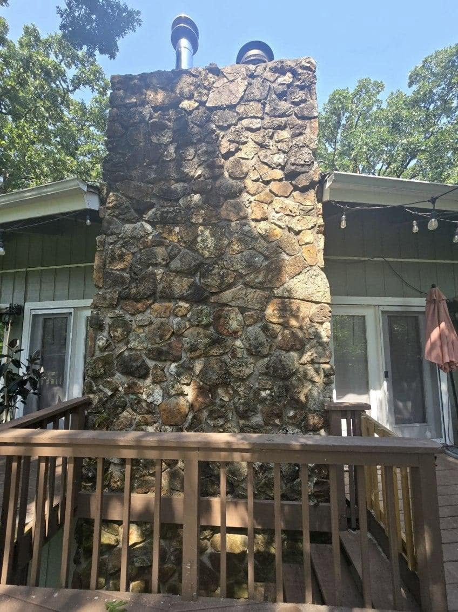
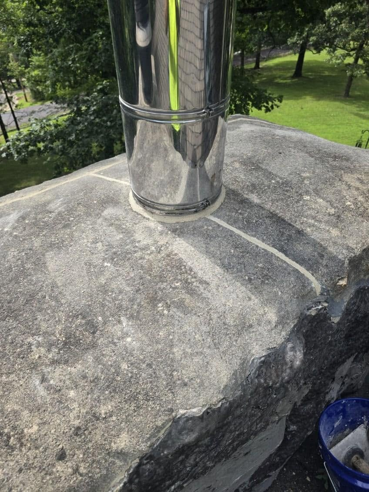
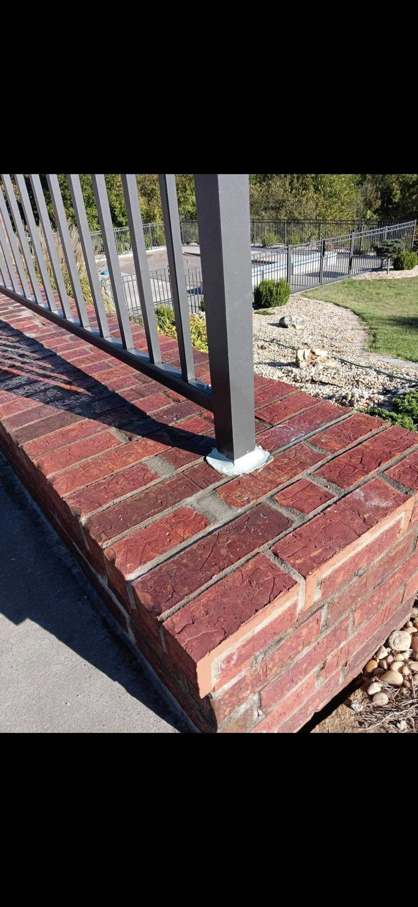

.png)
Masonry, concrete & waterproofing services
Repair the actual failure point—cracked masonry, deteriorated mortar, concrete damage or a path where water is entering the structure.
Brick, stone & block wall repair
ESE Seal repairs damaged masonry on homes and commercial properties, including cracked brick, loose units, separation and localized deterioration. The goal is to preserve what can be preserved and make the repair fit the existing structure.

Restore deteriorated mortar joints
Open, cracked or powdering mortar joints can allow water deeper into masonry assemblies. Tuckpointing removes failed mortar from the affected joints and replaces it with new mortar that is properly packed and tooled.
Repair masonry exposed to the harshest weather
Chimneys are exposed on every side to rain, sun and freeze-thaw cycles. ESE Seal repairs damaged brick and mortar around chimneys and fireplace masonry and can help determine when a focused repair makes more sense than unnecessary replacement.

Foundation & poured concrete wall cracks
ESE Seal repairs accessible foundation and poured concrete wall cracks where the condition fits the company's repair scope. Eric evaluates the crack, surrounding wall and signs of moisture to determine the appropriate next step.
Address water at its entry point
Basement and foundation water problems can start at cracks, failed joints, porous masonry or exterior transitions. ESE Seal evaluates the visible failure points and applies repair and sealing methods suited to the condition of the property.

Concrete flatwork repair & resurfacing
Repair options may be available for damaged concrete flatwork, steps, porches and other localized surfaces. ESE Seal looks at the condition of the concrete and surrounding area before recommending repair versus replacement.
Sealing, caulking & exterior cleaning
ESE Seal's public service listings also include exterior caulking and power washing. These can be useful as part of repair preparation, maintenance or restoration depending on the project.
Not sure which service fits?
That is exactly what the estimate is for. Let Eric look at the condition and recommend the practical repair.